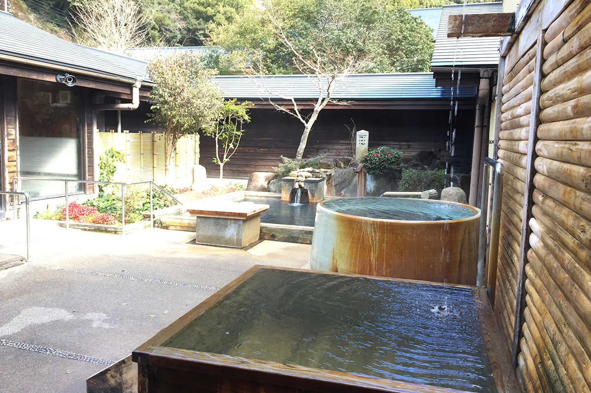
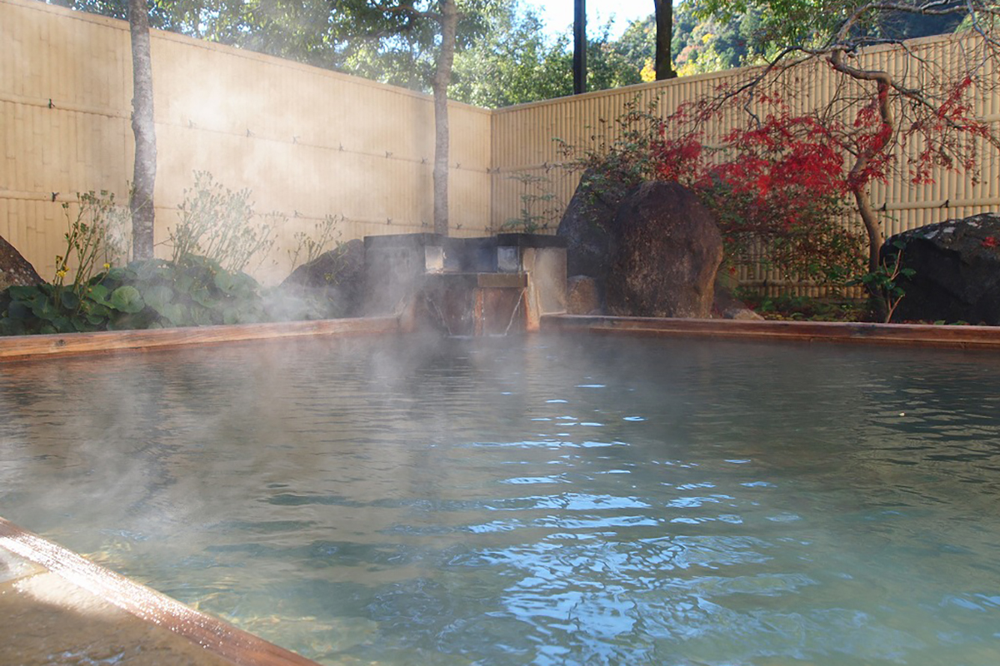
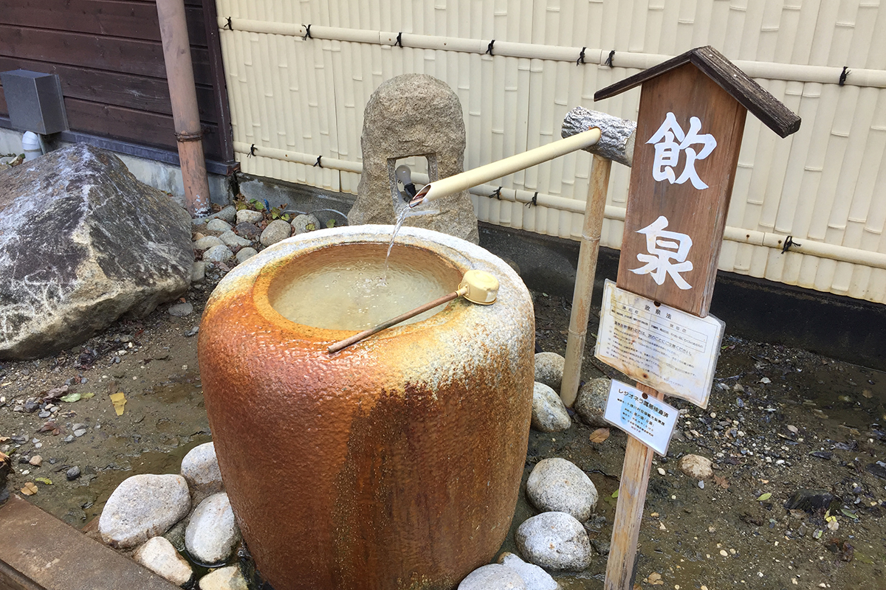
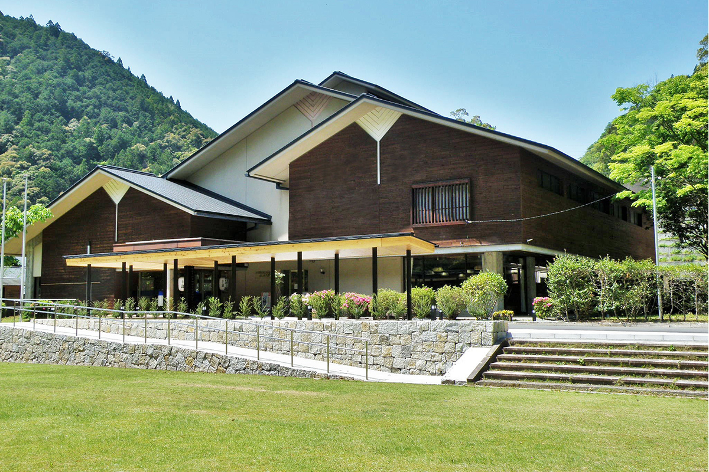
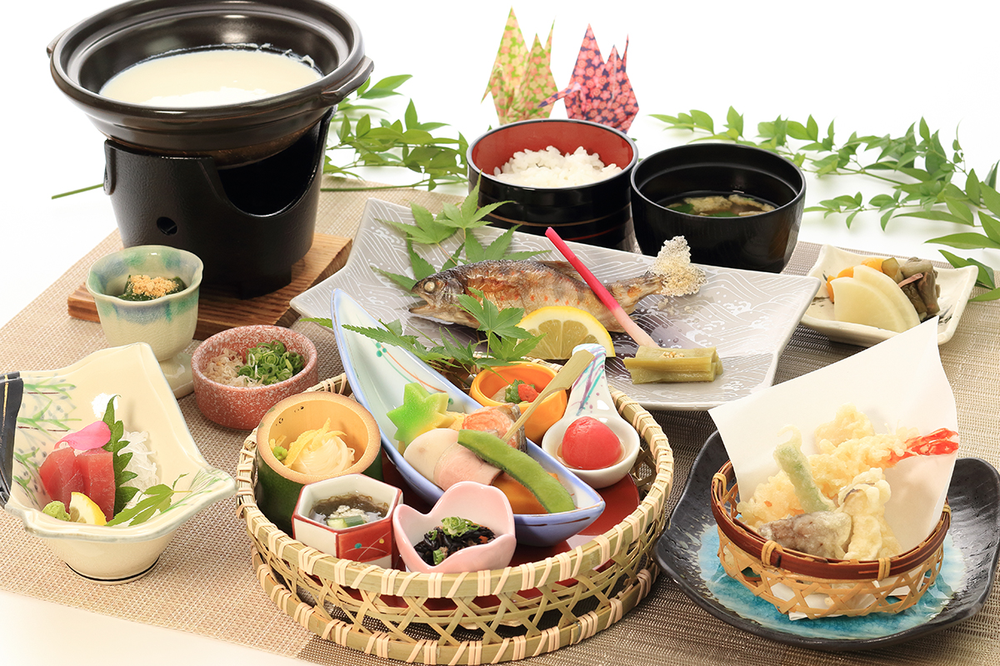
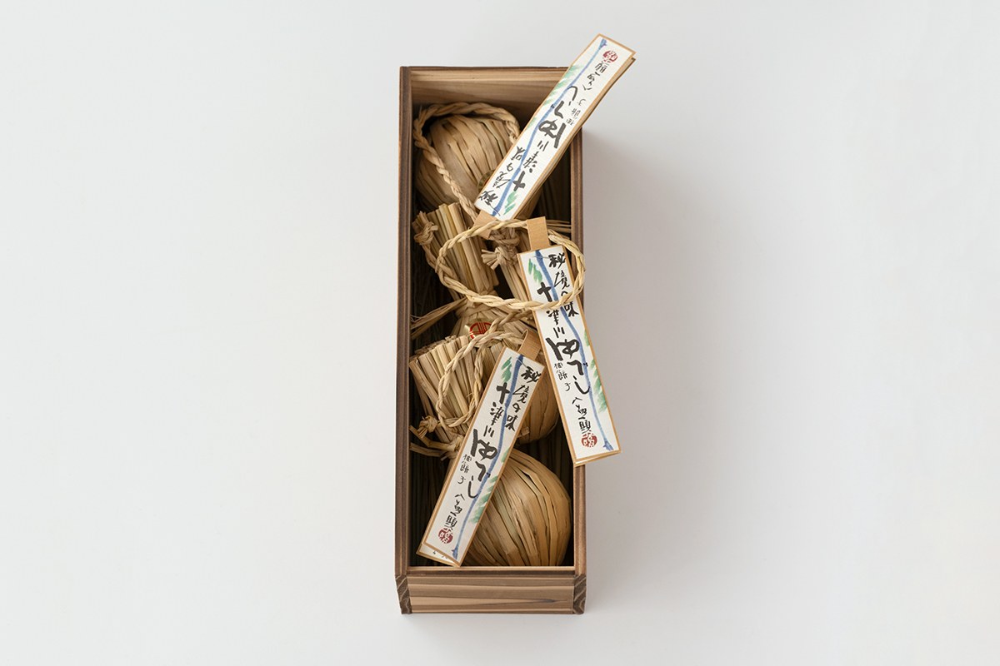
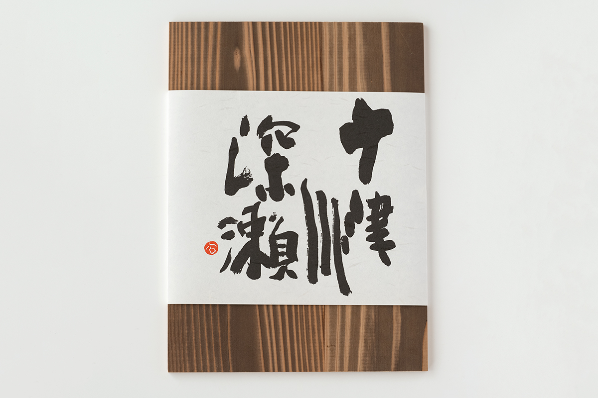
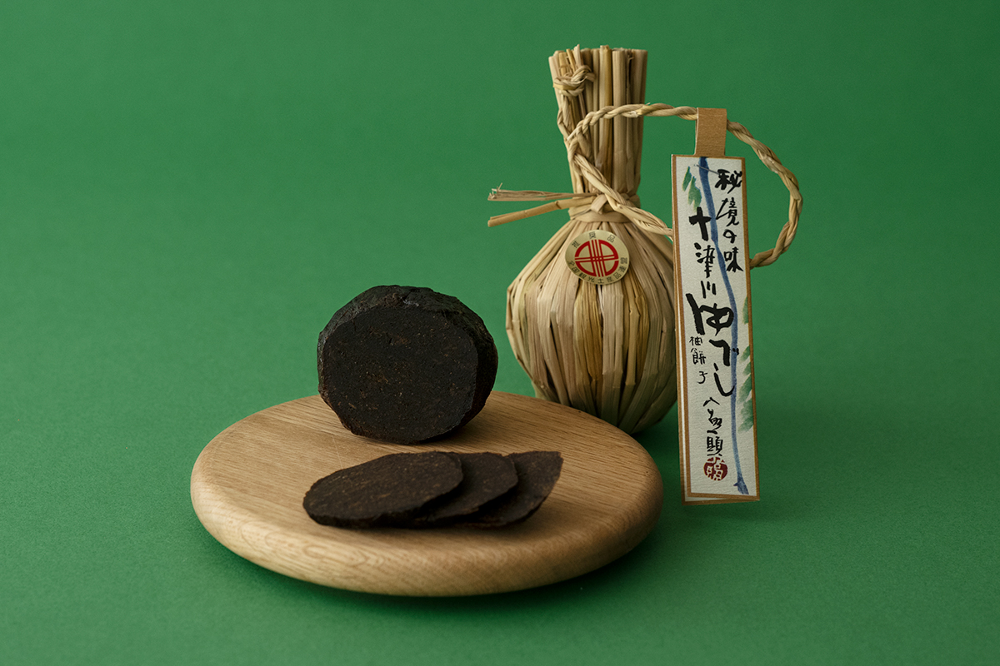

Префектура Нара · Тоцукава · онсэн и сладости
Тоцукава: онсэны с водой прямо из источника и юдзу с мисо в соломенной обёртке

Деревня Тоцукава в горах полуострова Кии считается одним из самых глухих уголков Японии. Сюда едут за горячей водой, которую ничем не разбавляют, и за юдзу, начинённым мисо, в обёртке из плетёной соломы.
Онсэн
Вода прямо из источника
Деревня Тоцукава лежит почти в самом центре полуострова Кии, на юге префектуры Нара. Широкая известность пришла к ней в 2004 году. Тогда все 25 банных заведений деревни, сколько их было на тот момент, первыми в стране объявили, что работают только на воде прямо из источника: без подогрева, без разбавления и без повторного использования.
Сердце группы онсэнов Тоцукава это источник Тоцукава-онсэн, открытый в конце XVII века. По объёму и температуре воды ему почти нет равных на полуострове Кии, поэтому деревня и смогла первой сделать такой шаг, который потом подхватили по всей Японии. Вода здесь гидрокарбонатно-натриевая с хлоридами и простая сернистая. Профессор, который больше 40 лет изучает японские онсэны, вместе с коллегами проверил её химическими анализами и опытами с добровольцами: у неё очень сильное антиокислительное действие.

Hotel Subaru
Среди гостиниц деревни профессор выделяет Hotel Subaru с большим банным комплексом и бассейном на термальной воде. Просторная общая купальня с сауной отличается особенно мягкой водой. Это вода «для красивой кожи», и источник совсем рядом, поэтому профессор сам признаётся, что он поклонник этой гостиницы.
В саду устроена открытая купальня, где можно лежать в неглубокой воде, есть водопадный душ и первый в префектуре Нара питьевой источник. Лежать в горячей воде среди гор Кии и смотреть на звёзды лучший способ избавиться от городской усталости.

Чем заняться рядом
Совсем близко деревня Хатэнаси на тропе Кохэти, одном из маршрутов паломнического пути Кумано кодо, который входит в список Всемирного наследия ЮНЕСКО. Рядом святилище Тамаки, которое называют внутренним святилищем трёх великих святилищ Кумано, и длинный подвесной мост Танисэ. Здесь не заскучаешь, даже если остаться на два-три дня. В деревне есть и общественные купальни с красивыми видами, например «Иори-но ю», «Таки-но ю» и «Идзуми-ю», так что можно ходить из одной в другую.


Hotel Subaru
- Адрес
- префектура Нара, уезд Ёсино, деревня Тоцукава, Хиратани, 909-4
- Телефон
- +81 746-64-1111
- Цены / Вход
- с завтраком и ужином от 17 600 иен на человека, с налогом и сервисом
- Заезд / выезд
- 15:00 / 10:00
Сладость
«Тоцукава юбэси» в соломенной обёртке

На «Тоцукава юбэси» хочется сначала просто смотреть. Натуральная упаковка для еды почти исчезла, но в деревне Тоцукава до сих пор заворачивают юбэси в плетёную солому, как в старину. Его делает небольшая фирма «Тоцукава Фукасэ». Её хозяйка строго держится двух правил: всё делают вручную жители деревни, а вкус остаётся природным, без консервантов и искусственных подсластителей.
Говорят, имя отражает суть. «Тоцукава юбэси» хороший пример того, как упаковка отражает содержимое. Вместе с биркой на соломенном шнурке она наверняка восхитила бы автора классической книги о традиционной японской упаковке, будь он жив.

Юбэси в разных краях Японии делают по-разному, а в Тоцукаве держатся старого вкуса. Аромат юдзу сохраняют, а горные травы и другие начинки готовят с деревенским мисо, поэтому юбэси напоминает японский сыр. Его и едят как сыр: режут тонкими ломтиками и прокладывают сухофруктами, получается отличная закуска к сакэ. Можно и растворить ломтик в тядзукэ, рисе, залитом чаем.

«Тоцукава Фукасэ»
- Адрес
- префектура Нара, уезд Ёсино, деревня Тоцукава, Сигэсато, 997
- Телефон
- +81 746-66-0031
- Часы работы
- только понедельник и среда
Фото: Вакана Баба.